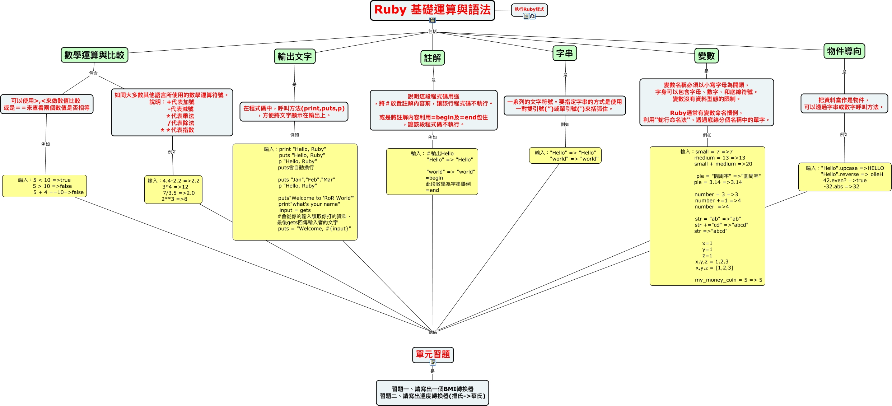

WARNING:
JavaScript is turned OFF. None of the links on this concept map will
work until it is reactivated.
If you need help turning JavaScript On, click here.
此概念图以 IHMC CmapTools 创建, 内含信息有关于: Ruby運算式基礎篇, 輸入："Hello" => "Hello" "world" => "world" 總結 單元習題, 註解 是 說明這段程式碼用途 ，將＃放置註解內容前，讓該行程式碼不執行。 或是將註解內容利用=begin及=end包住 ，讓該段程式碼不執行。, 數學運算與比較 包含 如同大多數其他語言所使用的數學運算符號。 說明：+代表加號 -代表減號 ＊代表乘法 /代表除法 ＊＊代表指數, 說明這段程式碼用途 ，將＃放置註解內容前，讓該行程式碼不執行。 或是將註解內容利用=begin及=end包住 ，讓該段程式碼不執行。 例如 輸入：＃輸出Hello "Hello" => "Hello" "world" => "world" =begin 此段教學為字串舉例 =end, 數學運算與比較 包含 可以使用>,<來做數值比較 或是＝＝來查看兩個數值是否相等, 在程式碼中，呼叫方法(print,puts,p) ，方便將文字顯示在輸出上。 例如 輸入：print "Hello, Ruby" puts "Hello, Ruby" p "Hello, Ruby" puts會自動換行 puts "Jan","Feb","Mar" p "Hello, Ruby" puts"Welcome to 'RoR World'" print"what's your name" input = gets #會從你的輸入讀取你打的資料， 最後gets回傳輸入者的文字 puts = "Welcome, #{input}", 輸入：small = 7 =ɳ medium = 13 =ᡅ small + medium =ᡌ pie = "圓周率" =>"圓周率" pie = 3.14 =ɯ.14 number = 3 =ɯ number +=1 =ɰ number =ɰ str = "ab" =>"ab" str +="cd" =>"abcd" str =>"abcd" x=1 y=1 z=1 x,y,z = 1,2,3 x,y,z = [1,2,3] my_money_coin = 5 => 5 總結 單元習題, 輸入：4.4-2.2 =ɮ.2 3*4 =ᡄ 7/3.5 =ɮ.0 2**3 =ɴ 總結 單元習題, Ruby 基礎運算與語法 包括 物件導向, 輸入：5 < 10 =>true 5 > 10 =>false 5 + 4 ==10=>false 總結 單元習題, Ruby 基礎運算與語法 包括 數學運算與比較, Ruby 基礎運算與語法 包括 輸出文字, 輸入：＃輸出Hello "Hello" => "Hello" "world" => "world" =begin 此段教學為字串舉例 =end 總結 單元習題, 字串 是 一系列的文字符號。要指定字串的方式是使用 一對雙引號(”)或單引號(')來括弧住。, 單元習題 是 習題一、請寫出一個BMI轉換器 習題二、請寫出溫度轉換器(攝氏->華氏), 輸出文字 是 在程式碼中，呼叫方法(print,puts,p) ，方便將文字顯示在輸出上。, 把資料當作是物件， 可以透過字串或數字呼叫方法。 例如 輸入："Hello".upcase =>HELLO "Hello".reverse => olleH 42.even? =>true -32.abs =ᡘ, Ruby 基礎運算與語法 透過 執行Ruby程式, 如同大多數其他語言所使用的數學運算符號。 說明：+代表加號 -代表減號 ＊代表乘法 /代表除法 ＊＊代表指數 例如 輸入：4.4-2.2 =ɮ.2 3*4 =ᡄ 7/3.5 =ɮ.0 2**3 =ɴ, 輸入："Hello".upcase =>HELLO "Hello".reverse => olleH 42.even? =>true -32.abs =ᡘ 總結 單元習題
